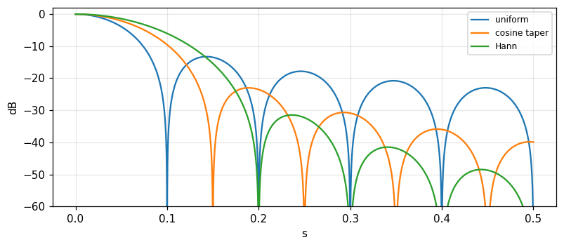
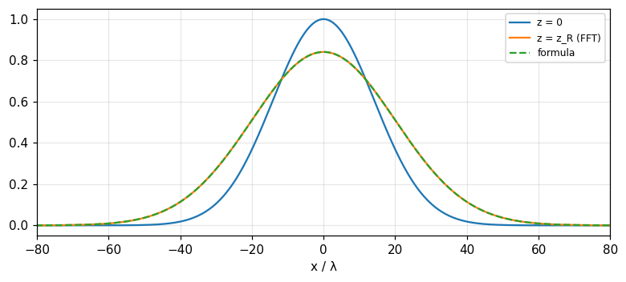

Antennas and optics: apertures, angular spectrum, transfer functions and diffraction
The far field of an aperture is the Fourier transform of the field distribution: beam width, beam steering, arrays, spectral sensitivity, MTF, plane-wave spectrum and Fresnel diffraction (Bracewell, chapter 15).
Lecture (slides) Hands-on with the Jupyter Notebook Self-check quiz
Lecture (slides)
Antennas and optics: apertures, angular spectrum, transfer functions and diffraction
- Establish the Fourier relation between the aperture field distribution and the angular spectrum (far field) from Huygens' principle.
- Translate the Fourier theorems into antenna effects: beam width, steering by a phase gradient, the array-of-arrays rule, the two-element interferometer, tapering.
- Use the spectral sensitivity function, the modulation transfer function (MTF) and fringe visibility (Michelson) as the transfer function of a scanning or imaging system.
- Distinguish propagating and evanescent waves (|s|>1) in the plane-wave spectrum, and compute the Fresnel field with the angular spectrum.
- Apply to practical questions: side lobes, array spacing, the resolution of the eye, sampling of a focal-plane image.
Use the buttons, the dots or the ← → keys to move between slides.
One-dimensional apertures and the angular spectrum
- Huygens' principle
- The uniform aperture and its nulls
- Monopulse and variants
Why antennas are close to Fourier
Antenna theory is sufficiently analogous to the theory of waveforms and spectra that familiarity with one field can be carried over to the other once one has the key. The first step is to establish a Fourier transform relation in this subject and then to see what physical quantities enter it. Since the purpose is to improve the versatility of the Fourier transform as a tool, only one aspect of antenna theory is touched on, but it is of fundamental importance. Bracewell starts with one-dimensional apertures: adequate for many antennas whose directivity separates into a product of directivities of one-dimensional apertures, and sufficient for setting up the analogy (pp. 406 to 407). Much of the material applies, with changes in terminology, at optical wavelengths too: parallel light incident on an aperture is diffracted into space much as radio emission from an aperture of the same shape (but larger in proportion to its wavelength).
The equivalent plane aperture
An electromagnetic horn feeding energy into semi-infinite space can be replaced by a plane-aperture model: as far as the flow of energy into the right half-plane is concerned the source is equivalent to a certain distribution of electric field over an aperture plane AA'; the field is zero over the part occupied by conductor but a definite distribution is maintained over the horn opening. If all conditions are independent of y we call the antenna a one-dimensional aperture; it is also supposed that the opening is several wavelengths across, equivalent to assuming highly directive antennas. Any antenna may be replaced, as far as distant effects go, by a plane distribution of field, so restriction to plane apertures is not in principle destructive of generality; but some (like end-fire Yagi arrays) are so nonplanar that they are considered otherwise (p. 407). The field at x is F(x)\cos[\omega t-\phi(x)], the phasor E(x)=F(x)e^{-i\phi(x)}.
Huygens' principle leads to the Fourier transform
By Huygens' principle the field at a distant point is the sum of the effects of the aperture elements; each element produces an effect proportional in amplitude to the field at the element and retarded in phase by the number of cycles in the path to the distant point. At distance r the field due to the element between x and x+dx is proportional to E(x)e^{-i2\pi r/\lambda}dx. For a direction making an angle \theta with the z axis and R the distance to the origin, r\approx R-x\sin\theta; lumping the average phase factor e^{-i2\pi R/\lambda} into the constant, the distant field in direction s=\sin\theta is \int E(x)e^{i2\pi xs/\lambda}dx (p. 408). Measuring distances in wavelengths, x_\lambda=x/\lambda, we get the angular spectrum P(s)=\int E(x_\lambda)e^{-i2\pi x_\lambda s}dx_\lambda and the inverse E(x_\lambda)=\int P(s)e^{i2\pi x_\lambda s}ds; the integral over infinite s causes no trouble since high directivity makes the integrand fall to zero while s is still well within -1 to 1 (p. 409).
The table of correspondence
| Waveform | Antenna |
|---|---|
| Time t | Aperture distance in wavelengths x_\lambda |
| Frequency f | Direction sine s |
| Waveform V(t) | Field distribution E(x_\lambda) |
| Spectrum S(f) | Angular spectrum P(s) |
By reciprocity the correspondence can be set up in two ways; the one given is customary (\"angular spectrum\"). P(s) is the minus-i transform of E, just as S(f) of V(t); remember that x and \theta are measured in opposite directions. Consequences: a rectangular pulse has a sinc spectrum so a uniformly excited finite aperture produces a sinc angular spectrum; an impulse has a flat spectrum so a very small aperture radiates isotropically; an impulse pair has a cosine spectrum so two infinitesimal antennas produce a cosinusoidal variation of the field on a distant plane (pp. 410 to 411). Any Fourier pair encountered may be so interpreted.
The uniform aperture: sinc and its nulls
A uniform field over w wavelengths, zero outside: E=\Pi(x_\lambda/w), P(s)=w\,\mathrm{sinc}\,ws (Fig. 15.3). With w=10: P(0) = 10 (all elements in phase), P(0.03) = 8.5839 (numerical integral 8.5839), and \int P\,ds=E(0) = 1. Nulls at s=k/w: the first at s=0.1, i.e. 5.7392 degrees. Phasor explanation (Problems 2 and 3): nulls occur when the fields of the two end elements of the aperture are in the same phase, i.e. the path difference between the extreme rays is \lambda,2\lambda,\ldots; the phasors close into a polygon. Measured: |P(k/w)| for k=1,2,3 are all below 1e-15.
Monopulse: half the aperture in antiphase (Problem 4)
An aperture uniform in amplitude but one half in antiphase with the other. Phasors give a null in the normal direction (s=0): the phasors of the two halves cancel. The angular spectrum is |P|=w\,\dfrac{\sin^2(\pi ws/2)}{\pi ws/2}. Halfway to the next null (ws=1) the value is 2/\pi of the uniform case: 0.6366; the true maximum of \sin^2x/x lies at ws = 0.742 and equals 0.7246 (p. 423). Used in tracking radar: the null on axis gives the difference signal (sum-difference). Similarly a uniform aperture with the other half in quadrature (Problem 5): |P| is skewed, nulls at ws=-0.5 and ws=1.5 (-0.5 and 1.5), the maximum 0.925 at ws = 0.37: the beam is squinted.
When the angular spectrum applies and when not
Bracewell restricts to highly directive antennas. The more general case brings in: (i) polarisation: around the normal to the aperture the radiated energy is about the same whether the aperture field is in the x or y direction, but at wide angles a cosine factor enters in one case and not the other; (ii) the difference between the radian and the unit of s; (iii) sharp edges in the aperture distribution set up evanescent fields which die away with z and do not contribute to radiated energy; in a highly directive antenna their energy is negligible against the radiation (p. 410). Part 4 treats the general two-dimensional case.
Self-check, part 1
- What is the angular spectrum of a uniform aperture w wavelengths wide?
- Where is the first null of a 10\lambda uniform aperture?
- Why does the monopulse have a null on axis?
Hints: w\,\mathrm{sinc}\,ws; s=0.1 (5.7 degrees); because the antiphase halves cancel.
Fourier theorems as antenna effects
- Beam width and steering
- Arrays of arrays, the interferometer
- Aperture tapers and side lobes
Beam width and aperture width
The similarity theorem: if the dimensions of an aperture are scaled up, the form of the aperture distribution being kept, the field pattern keeps its form and is compressed by the scaling factor: E(ax_\lambda)\to\dfrac1{|a|}P(s/a); the wider the aperture the narrower the beam (Bracewell, p. 411). |P(s)|^2 is called the angular power spectrum; its Fourier transform is the autocorrelation of the aperture distribution. From the reciprocal relation between the equivalent widths of a function and its transform, the effective beam width is the reciprocal of the equivalent width of the aperture autocorrelation function. Example: a uniform aperture 10 wavelengths wide: the triangular autocorrelation has equivalent width 10, so the power spectrum has equivalent width 0.1 rad, i.e. 5.73 degrees (Fig. 15.5, p. 412). Problem 14: the pupil of the eye, 4 mm at \lambda=0.55\,\mum: \lambda/D = 0.1375 mrad, or 1.22\lambda/D = 0.1678 mrad.
Steering the beam with a phase gradient
By the shift theorem, shifting a waveform from t=0 results in a progressive phase delay increasing with f; so the beam of an antenna can be shifted (from s=0) by introducing a linear gradient of phase along x_\lambda: E(x_\lambda)e^{-i2\pi Sx_\lambda}\supset P(s+S). To shift the beam by S a phase gradient of S cycles per wavelength is needed (p. 412). Methods: phase shifters or extra transmission-line lengths; displacing the feed from the focus of a parabolic reflector; small frequency shifts; or a thin dielectric prism, precisely as calculated from prismatic refraction. Measured with w=10 and gradient S=0.05: the beam centre moves to s = 0.05 rad (2.866 degrees), and the shifted spectrum matches P(s+S) with deviation 4e-15.
The array-of-arrays rule
Convolution parades as the array-of-arrays rule: the field pattern of a set of identical antennas is the product of the pattern of a single antenna and an \"array factor\", the pattern that would be obtained if the antennas were replaced by point sources. If E(x_\lambda) is the single antenna, a set of N antennas centred at x_1,\ldots,x_N has the distribution E*q with q=\sum\delta(x_\lambda-x_j); by the convolution theorem P_{\text{set}}=P(s)Q(s) with Q the array factor (p. 413). Measured: four uniform apertures of width 5 spaced d=8 apart: the array factor \dfrac{\sin4\pi ds}{\sin\pi ds} and the product P\,Q match the direct sum with deviation 2e-15; grating lobes at s=k/d = 0.125; at s=0 the array factor equals 4 (the number of antennas).
The two-element interferometer
The modulation theorem, a special case of the convolution theorem, has particular significance for antennas. A pair of identical antennas spaced well apart is called a two-element interferometer. The full distribution is a convolution between a single element and a pulse pair of the appropriate spacing, so the pattern is obtained from that of a single antenna by multiplying by a cosine function of s: two apertures of width w centred at \pm W (spacing 2W) give P(s)=2w\,\mathrm{sinc}\,ws\,\cos2\pi Ws, and the power pattern is approximately its square (Fig. 15.6, p. 414). With w=5, W=10: P(0.02) = 3.0396 (numerical integral 3.0396), and the cosine fringes have period 1/W = 0.1 rad. This is the basis of radio interferometers and of Michelson in optics (part 3).
Tapering: multiply by a broad factor, convolve with a narrow transform
Many aperture distributions are approximately uniform, departing only in that the excitation falls off toward the edges. This broad tapering factor has a narrow transform whose convolution with the pattern of the uniform distribution makes the necessary modification. The multiplying factor need not be real: e^{ikx} has unit modulus and phase proportional to x, its transform is a displaced impulse, convolution with a displaced impulse simply displaces the beam (pp. 413 to 414). Measured with w=10: the first side lobe level (relative to the main) is -13.26 dB for the uniform aperture, -23 dB for the cosine taper \cos(\pi x/w) and -31.47 dB for the \cos^2 (Hann) taper; the slopes of the decay of the side-lobe peaks (amplitude against s) are -1, -2, -3 respectively: the smoother the edge, the lower the side lobes and the faster they die.

Problems 7 and 8: effective beam widths of tapers
The equivalent width of the power spectrum is \Delta s_{\text{eq}}=\dfrac{\int|P|^2ds}{|P(0)|^2}=\dfrac{\int|E|^2dx}{(\int E\,dx)^2} (by Rayleigh). Uniform: \Delta s\cdot w = 1; cosine taper \cos(\pi x/w): 1.2337 (\pi^2/8); \cos^2 taper: 1.5 (3/2): tapering widens the beam. Problem 8: can the beam be made narrower than the uniform case by an aperture brighter at the edges than at the centre? By Cauchy-Schwarz \int E^2\ge(\int E)^2/w, so \Delta s\cdot w\ge1 for every positive distribution over width w: no, in terms of equivalent width; for example E=0.4+6x^2/w^2 gives 1.2469. (The distance to the first null can, however, be narrower with edge-brightened distributions at the price of high side lobes.)
Circular apertures: the first side lobe
For a circular aperture of radius a the angular spectrum is the Hankel transform (module 16). The uniform circular aperture: 2J_1(z)/z, first side lobe at z = 5.1356 with level -17.57 dB. Problem 13: excitation amplitude proportional to a^2-r^2 (a parabolic taper): the spectrum is proportional to 8J_2(z)/z^2, the first side lobe is lower: -24.6 dB (at z\approx6.38). The book states 26 dB while the recomputation here gives -24.6; the book may round generously or use a different taper (we flag the difference without altering the book). Practical reasons the theory is not reached: a feed-supporting tripod obstructs the aperture; for example blocking 5 percent of the area perturbs at about the side-lobe level.
Self-check, part 2
- What is the beam width of a 10\lambda uniform aperture in degrees?
- What phase gradient is needed to shift the beam by S?
- What does the cosine taper trade for what?
Hints: 5.7 degrees; S cycles per wavelength; lower side lobes (−23 dB) for a beam 1.23 times wider.
Spectral sensitivity, MTF and fringe visibility
- The spectral sensitivity function
- MTF and OTF
- Michelson's fringes
Scanning the sky: a convolution of brightness with the beam
When the first sky maps of radio emission were made it was apparent that the observed distribution of intensity could not be exactly the true distribution because of averaging of the power received from different directions within the beam. Because of the sky's curvature and the beams of 10 degrees or more then, the connection with two-dimensional convolution was not immediately apparent. But when a small patch of sky is scanned by a narrow beam the situation is analogous to signal theory: the true distribution of brightness is the input signal, the power radiation pattern of the antenna is the impulse response of a linear system, and the output record is the convolution between the true distribution and the antenna pattern. By the convolution theorem there is a transfer function describing the sensitivity to different spectral components (Bracewell, p. 415). Spatially uniform brightness is \"spatial d.c.\"; the response to sinusoidal components weakens as the spatial frequency u (cycles per radian) increases: the minima are filled in by adjacent brighter areas within the beam, the maxima eroded.
The spectral sensitivity function is the aperture autocorrelation
The reduction factor relative to spatial d.c. is the spectral sensitivity function T(u); by the convolution theorem the autocorrelation of the aperture distribution (Fig. 15.5) expresses the dependence of sensitivity on spatial frequency. Example E=\Pi(x_\lambda/w): the power pattern w^2\mathrm{sinc}^2ws has transform w\Lambda(u/w), normalised T(0)=1: T(u)=\Lambda(u/w) (u in cycles per radian, w in wavelengths). The book prints \Lambda(wu/\lambda) and a critical frequency \lambda/w; by dimensional analysis the critical frequency must be w (cycles per radian, =w/\lambda cycles per radian if w is measured in length units) — the ratio appears inverted in the printing (we checked numerically). Measured w=10: T(5) = 0.5, T(10) = 0 (cutoff), T(12) = 0 (zero); the aperture autocorrelation computed directly and the transform of the power pattern agree to 2e-04.
The curious twist: finite impulse response, cut-off frequency response
The analogy with signal filters has a curious twist: a filter with a finite-duration impulse response has a frequency response that runs on; the analogous frequency response of an antenna cuts off. The reason: the aperture has finite size so its autocorrelation has width 2w and is cut; while the angular power pattern runs on (side lobes) — the two domains swap roles compared with time-frequency (p. 416). Practical consequence: an antenna does not respond at all to spatial components above the cutoff, and all antennas representable by an aperture distribution of width w have the same cutoff, independent of the distribution; a taper only changes the form of the transfer function below the cutoff. Measured: the uniform aperture has T(10) = 0; the cosine-tapered aperture also cuts off at 10 (equal to w) but T(5) = 0.3183 differs from 0.5.
The modulation transfer function (MTF)
The image created by a camera lens depends on the scene in a way related to antenna mapping: the 3D scene is projected onto an object plane parallel to the film; the light from each point of the object is smeared into a spot called the point response function; it varies over the image plane but is taken to be invariant over \"isoplanatic patches\", within which a simple convolution relation holds between object and image. If the object brightness is a spatial sinusoid the image is sinusoidal too, of reduced amplitude given by a visibility function normalised to unity for d.c.; there may be a spatial phase shift, but for the central isoplanatic patch the circular symmetry of a lens makes phase shift unimportant (p. 416). For a diffraction-limited circular aperture the MTF is the autocorrelation of the pupil: \mathrm{MTF}(\nu)=\dfrac2\pi[\arccos\nu-\nu\sqrt{1-\nu^2}] with \nu=u/u_c; measured \nu=0.5: 0.391 (direct overlap of two discs 0.391), \nu=0.25: 0.685.
Michelson and the diameter of Betelgeuse
The visibility function played a basic role in the measurement of stellar diameters by A. A. Michelson (1902) in visual observations of the amplitude of sinusoidal diffraction fringes seen in a telescope when the aperture was blocked except for two parallel slits. By noting how the visibility of the fringes fell off with increased slit spacing, Michelson obtained part of the Fourier transform of the brightness distribution over Betelgeuse and deduced an angular size parameter. Atmospheric variation makes the fringes move so spatial phase was ignored; the term fringe visibility was replaced by MTF, corresponding to the absolute value of the spectral sensitivity function; when spatial phase is taken into account the optical transfer function OTF (the complex Fourier transform of the point response function) is used (p. 416). For a uniform stellar disc of angular diameter \theta the visibility is |2J_1(x)/x| with x=\pi\theta B/\lambda: x=2 gives 0.5767, the first null x = 3.8317. An illustrative example (not data from the book): fringes vanishing at B=3.07 m, \lambda=0.575\,\mum give \theta=1.22\lambda/B = 0.0471 arcseconds.
Complex fringe visibility and radio interferometry
From the point of view of radio interferometry, fringe visibility generalises into complex fringe visibility, taking into account not only the observed fringe amplitude but also any spatial displacement expressed in terms of the fringe spacing (Bracewell, 1958). In electronics the complex factor T(f) relating the output sinusoid to the input sinusoid, as well as |T(f)|, may both be called the transfer function. The van Cittert-Zernike theorem (beyond the book) says the complex visibility at separation B is the Fourier transform of the brightness: for a point source displaced by \theta_0 the complex visibility has phase e^{-i2\pi B\theta_0/\lambda} and modulus 1: measured with B/\lambda=50, \theta_0=0.002: phase -0.6283 rad and modulus 1. For two equal point sources separated by \Delta\theta the modulus is |\cos(\pi B\Delta\theta/\lambda)|: \Delta\theta=0.005 at B/\lambda=50 gives 0.7071.
Equivalence table: antenna, optics, signals
| Antenna | Optics | Signals |
|---|---|---|
| Aperture distribution | Pupil function | Waveform |
| Angular spectrum | Fraunhofer diffraction | Spectrum |
| Power pattern | Point response | Impulse response |
| Spectral sensitivity | MTF / OTF | Transfer function |
The notion that scanning or mapping with a beam in space is analogous to electrical filtering in time, once a novel and unformulated concept, illustrates the versatility of the Fourier approach; it serves also the user not concerned with the details inside but engaged in information gathering and processing (Bracewell, p. 422). Note that every number in this part (spectral sensitivity, MTF) comes from the same autocorrelation.
Self-check, part 3
- What form does the spectral sensitivity function of a uniform aperture w take?
- Why does an antenna have a cutoff while a finite-duration filter does not?
- How does the MTF differ from the OTF?
Hints: the triangle \Lambda(u/w); because the finite aperture makes the autocorrelation finite; the MTF is the modulus of the OTF.
Plane-wave spectrum, two-dimensional theory, Fresnel diffraction
- Physical aspects of the angular spectrum
- Two dimensions and direction cosines
- Fresnel diffraction
Physical aspects of the angular spectrum
Fourier analysis of an aperture distribution is in terms of components e^{i2\pi x_\lambda s}: an amplitude the same at all points of the aperture but a phase advancing progressively along it; the field set up by a plane wave incident on the aperture from behind at a suitable angle (the sine of the angle of incidence is s). The aperture field set up by a certain incident plane wave is the field which will launch a plane wave in the same direction. Thus each component launches a plane wave in a certain direction and the total radiation is a combination of plane waves in all directions with suitable amplitude and phase. When |s|>1 the phase 2\pi x_\lambda s changes faster than one full cycle per wavelength: no traveling wave can set up such a field since the crest-to-crest distance along any oblique section of the wave is \ge\lambda; if such an aperture field is imposed no traveling wave is launched and the field dies away in z (p. 417).
Cosine components: standing waves and the waveguide
Instead of analysing into exponentials we can break the aperture distribution down into cosine and sine distributions. The spatial period of a component, measured in units of x, is \lambda/s; the spatial frequency is s/\lambda cycles per unit of x. Each component is composed of a pair of exponentials so it launches a pair of equal plane waves in directions equally inclined to the x direction: the lower the spatial frequency the closer the two waves are to the z direction; as the spatial frequency approaches one cycle per wavelength we have the standing wave set up by two waves travelling in opposite directions in the plane of the aperture (pp. 417, 420 to 421). With two plane waves of incidence angle i: \sin i=k_x\lambda/2\pi, the field \cos k_xx\cos k_zz, the period along z is \lambda_z=2\pi/k_z=\lambda/\cos i: with i=30^\circ, \lambda_x = 2\lambda and \lambda_z = 1.1547\lambda; the phase speed along z is \lambda_z/\lambda times the speed of the incident waves: exactly a waveguide with walls at x=\pm\lambda_x/4. Measured by numerical propagation: after z=\lambda_z the field returns to \cos k_xx with deviation 3e-13.
Two-dimensional theory: direction cosines
Consider a field distribution over an aperture plane (x,y) with only a component E_y (the x component zero; otherwise handled separately). There is a z component normal to the plane but it is deduced from the vanishing divergence condition and is not needed in a specification. The field set up is a sum of plane waves P(l,m)e^{i2\pi(lx+my+nz)/\lambda}dl\,dm with l,m,n direction cosines, n=\sqrt{1-l^2-m^2}. A wave in direction (l,m,n) produces on z=0 a field of spatial period \lambda'=\lambda/\sqrt{l^2+m^2}. If l^2+m^2>1 then \lambda'<\lambda and n is imaginary: an evanescent wave in the (x,y)-plane, decaying exponentially with z, not contributing to the far field. If l^2+m^2<1 then \lambda' ranges from infinity (normal propagation) to \lambda (parallel to the plane) (p. 418). The radiated power per unit solid angle involves the factor 1/n^2 times |P|^2 and, for highly directional antennas, \cos^2\phi\approx1.
The two-dimensional pair with a cosine factor
The complex amplitude of the wave in direction (l,m) is related to the angular spectrum through a directional factor: E_y(x_\lambda,y_\lambda)=\iint P(l,m)e^{i2\pi(lx_\lambda+my_\lambda)}dl\,dm is the standard Fourier transform of P, with radiation pattern \cos^2\phi\,|P(l,m)|^2, where \phi is the angle between the direction (l,m) and the yz plane, \cos\phi=(1-l^2)^{1/2} (p. 419). This is not quite the classical Fourier transformation because of the factor n in the relation between P and the wave amplitude; but for directions close to the z axis \cos\phi\approx1 and |P|^2 is the radiation pattern. Measured: at l=0.1, \cos\phi = 0.995 and the squared departure 0.01; at l=0.5, \cos^2\phi = 0.75, clearly different from 1.
Optical diffraction against antennas
Because the electromagnetic theory governing optical radiation is the same as for antennas there is a fundamental analogy; there is no clear boundary between radio and optical waves, as witnessed by microwave optics. However most optical devices are much smaller than antennas, giving differences in fabrication and use. Quantum effects are not significant for antennas except at the very highest frequencies or very low temperatures. A more striking difference between a telescope and a receiving antenna: the telescope captures an image in its focal plane while an antenna usually does not: there is an image in the focal plane of a paraboloidal reflector but normally only one pixel is captured, for example by a single horn at the focal point, as though the film or CCD were replaced by a single photodetector; the point response function in optics is recorded in its entirety by one exposure, while for an antenna a two-dimensional raster scan must be performed (pp. 419 to 420). A closer analogy is precision photometry of stars with a single photodetector in the focal plane.
Far field and near field
With antennas the objective was to relate a plane aperture distribution of field to the radiation pattern as a function of direction in the distant field; the angular spectrum contains all the information of the aperture distribution and thus provides a rigorous basis. But the distant pattern is of more importance to communication links and reception. If the aperture is N wavelengths across, the distant (Fraunhofer) field sets in at a distance of N aperture widths. Example w=100\lambda: the distance N w = 10000\lambda = 100 aperture widths (Fresnel number \approx1, i.e. D^2/\lambda). Communication ordinarily takes place over much greater distances. Exceptions: radars studying the ionosphere at very low frequencies where the near field extends to several tens of kilometres; and the elements of many antenna arrays are close enough to be in each other's near fields, a factor in design (p. 420). In optics on the other hand the near (Fresnel) field is of everyday importance.
Fresnel diffraction by the angular spectrum
Fourier analyse the aperture distribution into sinusoids of various spatial frequencies k_x, multiply each by the propagation factor \cos k_zz with k_z=\sqrt{(2\pi/\lambda)^2-k_x^2}, and recombine by addition (p. 421). An evanescent component (k_z imaginary) uses the decay factor e^{-|k_z|z}. A rigorous procedure, like calculating the response of a filter to an input waveform by analysing into components, altering each by a transfer factor and recombining; well suited to numerical computation with the FFT (module 14). Measured with a Gaussian beam E(x,0)=e^{-x^2/w_0^2}, w_0=20\lambda: at z_R=\pi w_0^2/\lambda the half-width w=w_0\sqrt2 = 28.284\lambda, the peak amplitude 2^{-1/4} = 0.8409; propagation by FFT matches the Gaussian formula with maximum deviation 2e-05. An evanescent wave k_x=1.5k decays like e^{-|k_z|z}: at z=0.5\lambda only 0.0298 remains.

Self-check, part 4
- When |s|>1 does the aperture field radiate?
- How is the Fresnel field computed with the angular spectrum?
- Where does the far field of an aperture N wavelengths across begin?
Hints: no, it is evanescent and decays with z; multiply each component by e^{ik_zz}; at N aperture widths.
Practical problems and information applications
- Slot arrays and grating lobes
- Sampling the focal-plane image
- Summary of applications
Rayleigh's theorem for antennas
Rayleigh's (Parseval's) theorem interpreted: the total radiated power is \int|P(s)|^2ds=\int|E(x_\lambda)|^2dx_\lambda, the sum of the powers passing through the aperture elements (Problem 9). For the uniform aperture w=10: 10 for both sides. The definite-integral theorem says E(0)=\int P\,ds: the field at the aperture centre equals the area of the angular spectrum; and P(0)=\int E\,dx: the on-axis strength is proportional to the total excitation. The uncertainty relation: the product of aperture width and beam width is not smaller than a constant: a narrow aperture cannot have a narrow beam; measured by equivalent widths, \Delta x_{eq}\cdot\Delta s_{eq}= 1 for the uniform aperture.
Problem 16: a slot array of eight, what spacing
Eight parallel slots cut in the metal undersurface of an aircraft; the slot spacing is to be chosen so that the gain is a maximum. The structural expert claims the slots can be tightly packed since the field intensity on the ground vertically below is independent of spacing by Huygens' principle; the antenna expert agrees the field intensity may be the same but extra power will be radiated in unwanted directions; he proposes four-fifths of a wavelength apart. His assistant argues by Rayleigh that the power is the sum of powers through each slot so tighter packing is warranted. The error: Rayleigh gives a total power independent of spacing but the distribution of power over direction changes; the array factor \dfrac{\sin(8\pi ds)}{\sin(\pi ds)} has grating lobes at s=k/d. With d=0.8\lambda: 1/d = 1.25 >1: no real grating lobe (outside the physical range); with d=1.5\lambda: 0.6667: present; packing tightly widens the beam since the total aperture 8d shrinks: 1/(8d): 0.1562 and 0.8333 rad for d=0.8 and 0.15 (Bracewell, p. 425).
Problem 10: sampling a focal-plane image
A radio image of a celestial object is formed on a surface containing the focus of a paraboloidal reflector: the image is the convolution of the brightness with the power pattern, so it is a band-limited signal: the power pattern has transform (the spectral sensitivity function) cutting off at D/\lambda cycles per radian. By the sampling theorem (module 13) it suffices to sample the image at intervals \lambda/(2D) radians. Example a D=25 m dish at \lambda=0.21 m: beam width \lambda/D = 0.0084 rad = 0.48 degrees; the Nyquist sampling interval 0.0042 rad = 0.24 degrees. The collector at the focus has finite size: if it is larger than the sampling interval it smooths further (another convolution), so its size is connected with the sampling interval. Measured: sampling the power pattern at the Nyquist interval and sinc-interpolating: the reconstruction deviates by 3e-09.
Problems 11 and 12: X-rays and side lobes
Problem 11: forming an X-ray image of an extended celestial object is difficult because X-rays are not much refracted or reflected. A line of approach following the chapter's lesson: use a modulating aperture (a coded mask or slit array) then deconvolve by Fourier; also the idea behind interferometers and tomography (module 16). Problem 12: a highly directive antenna has near side lobes whose power level falls as |\theta|^{-2} or |\theta|^{-1} depending on the smoothness of the edge (measured: the sinc has side-lobe peaks falling like 1/s, the cosine taper like 1/s^2, Hann 1/s^3, the slopes -1, -2, -3); the law cannot persist out to \theta=\pi/2 because s=\sin\theta\le1 and obliquity factors (cosine, polarisation) cut it. The first side-lobe level for the uniform aperture is -13.26 dB.
Problem 15: the radiating slot
The tangential electric field component in the aperture of a slot antenna is E_y=\Pi(x/w)\Pi(y/l) (uniform in a rectangle) with w\ll l. The angular spectrum separates: P(l_x,m)=w\,\mathrm{sinc}\,wl_x\cdot l\,\mathrm{sinc}\,lm (wavelength as the unit). The equivalent width of the beam in the principal directions: 1/w in x (wide) and 1/l in y (narrow): with w=0.1, l=10 wavelengths: 10 and 0.1 rad, a fan beam. Radiation is zero along the aperture plane: with the direction cosine factor \cos\phi=(1-l_x^2)^{1/2} of the field E_y, radiation cannot occur at l_x=\pm1 (parallel to the plane along x): the factor \cos^2\phi equals 0 at l_x=1.
Problem 17: lunar occultation
A remote point source of meter-wave radiation emerges from behind the moon's limb: the received power as a function of x (the distance of the observer from the grazing ray) varies like Fresnel diffraction at a straight edge: I(x)=\dfrac12\{[C(v)+\tfrac12]^2+[S(v)+\tfrac12]^2\} with v=x\sqrt{2/\lambda D} (D the distance to the moon). The derivative q(x) has a Fourier transform with only a quadratic phase in frequency, of the form e^{\pm i\pi\lambda Ds^2}: convolving with q merely scrambles the Fourier components by dephasing them in proportion to the square of their frequency, so convolving with q(-x) \"unscrambles\" them (p. 425). Measured (standard Fresnel diffraction, beyond the book): the intensity at the geometric edge v=0 equals 0.25 (a quarter of the unobstructed level), and the first diffraction overshoot reaches 1.3704 at v = 1.22.
Summary: Fourier as a design and information tool
Antennas and optical devices are common parts of measuring instruments, communication links, recording equipment, machines and elastic structures and as such play a role in a variety of fields. Microwave sensing of the environment and photography are examples where convolution relations exist between what is there and what is recorded. A Fourier background is thus useful not only for understanding and designing radio and optical sensors but also for their information-gathering functions. As far as information is concerned the sensor might be regarded as a black box specified by external properties such as beam width. To go further requires a background in electromagnetic theory (Kraus, 1988) and optics (Goodman, 1996) (Bracewell, p. 422). The table: aperture w: beam 1/w (0.1 rad for w=10), spectral cutoff w, first side lobe -13.26 dB (uniform) down to -31.47 dB (Hann); the shift, convolution, modulation, similarity and Rayleigh theorems all have physical meaning.
Self-check, part 5
- What is the Nyquist sampling interval of a focal-plane image?
- Where are the grating lobes of a slot array spaced d?
- What does Rayleigh's theorem say about the radiated power?
Hints: \lambda/2D; s=k/d; the total power equals the sum of the squared aperture excitation.
Takeaways
- The angular spectrum P(s)=\int E(x_\lambda)e^{-i2\pi x_\lambda s}dx_\lambda; a uniform aperture w gives w\,\mathrm{sinc}\,ws, nulls s=k/w, beam 1/w.
- Similarity: wider is narrower; shift: a phase gradient S steers the beam by S; convolution: P\,Q (array of arrays); modulation: the interferometer \cos2\pi Ws; tapers lower side lobes for a wider beam.
- The spectral sensitivity is the aperture autocorrelation, cut at w; the MTF is the modulus of the OTF; Michelson fringes give stellar diameters.
- Plane-wave spectrum: |s|\le1 propagates, |s|>1 evanesces; the Fresnel field = multiply each component by e^{ik_zz}; far from N aperture widths.
- Rayleigh: total power =\int|E|^2; sample the focal-plane image at \lambda/2D; grating lobes s=k/d when d>\lambda.
📜 Theory & historical background
Huygens (the principle), Fraunhofer and Fresnel (diffraction), Michelson (1902) measuring stellar diameters by fringe visibility, Bracewell and Roberts (1954) and Bracewell (1958, 1962) translating antenna mapping terminology into filter theory; Kraus (1988) and Goodman (1996) are the standard texts (Bracewell, pp. 406 to 423).
🔎 Real-world case study
From aperture to map. A 25 m dish at 21 cm gives a beam \lambda/D = 0.48 degrees; the array factor of eight slots spaced 0.8\lambda has no real grating lobe while at 1.5\lambda it has one at s = 0.6667. Scanning the sky blurs the brightness with the power pattern, the transfer function being a triangle \Lambda(u/w) cut off at w; sampling the image at \lambda/2D = 0.24 degrees suffices. A Hann taper lowers the first side lobe from -13.26 dB to -31.47 dB with a beam 1.5 times wider. And the Fresnel field of a Gaussian beam at z_R is computed accurately (deviation 2e-05) by multiplying the angular spectrum by e^{ik_zz} and inverse FFT.
🧮 Formula sheet for this module
🧪 Hands-on with the Jupyter Notebook
- Open the notebook and run the setup cell.
- Task 1: plot the angular spectrum of the uniform, cosine-tapered and Hann-tapered apertures with w=10; measure the first side-lobe level and the beam width.
- Task 2: build an array of eight slots with spacing d=0.8,1.0,1.5\lambda and find the grating lobes within |s|\le1.
- Task 3: propagate a Gaussian beam by the angular spectrum to z=2z_R, compare with the formula and check the evanescent waves.
- Task 4: compute the MTF of a circular aperture with a central obstruction (a two-mirror telescope) and compare with the unobstructed one.
Open in Google Colab Download notebook (.ipynb)
The notebook generates its own data in code, so no external files are needed. Every number on this page is printed by the notebook and cross-checked with two independent methods.
⚠️ Common misreadings
The opposite: the cosine taper widens the beam 1.2337 times and \cos^2 1.5 times (by equivalent width); in exchange for lower side lobes (-23 and -31.47 dB).
Rayleigh keeps the total power, but a smaller total aperture widens the beam: 1/(8d) = 0.8333 rad for d=0.15; and grating lobes sit at 1/d = 0.6667 when d=1.5.
An antenna cuts off entirely at w: T(12) = 0 for w=10.
Only |s|\le1; a wave with k_x=1.5k is evanescent, only 0.0298 remains after 0.5\lambda.
✅ Self-check quiz
Click an answer to grade it immediately and read the explanation. Results are not saved.
References
- R. N. Bracewell, The Fourier Transform and Its Applications, 3rd ed., McGraw-Hill, 2000, chapter 15 (pp. 406 to 427).
- Works cited by the chapter: J. D. Kraus (1988), J. W. Goodman (1996), M. Born and E. Wolf (1986), A. A. Michelson (1902), Bracewell and Roberts (1954), Bracewell (1958, 1962, 1995), Thompson, Moran and Swenson (1999).